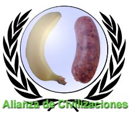

Alianza de Civilizaciones
 De: La Frikipedia, la enciclopedia extremadamente seria.
De: La Frikipedia, la enciclopedia extremadamente seria.
 El logo habla por sí sólo
Fue propuesta por José Luis Rodríguez Zapatero en Septiembre de 2.004, pero no fue hasta el 2.010 en que se vería materializada a raíz de un retorcido complot con tintes administrativos que impuso un bufete de abogados cocainómanos de las afueras de Elche.
La triquiñuela consistió en masivas campañas de pishing hacia los departamentos de estado de todo el mundo. Disfrazado de encuesta de satisfacción de El Corte Inglés, se escondía el formulario 590, conocido por ser el que habitualmente se usa para ceder la soberanía de un país, disponible en la red. Huelga decir que la Alianza está formada por aquellos países cuyas administrativas del departamento de estado no estaban muy finas ese día.
La Alianza da cabida a dos grandes civilizaciones de nuestro planeta: Civilización Indostática y Civilización Occidental. El objetivo es reconciliar dos posturas antagónicas. La postura occidental es que ellos no tienen ningún problema y que desconocen la raíz del conflicto, por otra parte, los indostáticos reclaman que los occidentales dejen de moverse tanto poniendo en peligro el reposo de la corteza terrestre.
Países que forman parte de la Alianza de Civilizaciones en la actualidad:
Por parte de la Civilización Occidental:
- República de Parcelas del Sector 1 del Plan Parcial del Polígono Industrial de Sineu
Por parte de la Civilización Indostática:
- Monarquía en Reposo de Buthan
Logros de la Alianza más destacables:
- España consigue que Marruecos reconozca, no sólo que Ceuta y Melilla son españolas, sino que también lo sean Rabat, Nueva York y Moscú.
- Marruecos, en contrapartida, obtiene un acuerdo formal por el que España se compromete a no emitir más televisión en Marruecos. La medida mejoró extraordinariamente la salud pública del país alauita.
- Cesaron automáticamente las hostilidades anteriores entre países miembros. Actualmente los miembros se dedican a hostigar a los no-miembros con las mismas excusas con la que una parte de los miembros hostigaban anteriormente al resto de miembros. La consecuencia inmediata es que los no-miembros quieran ser miembros, para poder atacar a su vez a los no-miembros que queden. En un futuro, todos los paises del mundo serán miembros, con lo que habrá que volver a empezar disolviendo la alianza, para poder seguir hostigando indefinidamente, que es lo que mueve a toda alianza.
- Andorra se convirtió en líder de la alianza desde que sus agentes secretos robaran el Formulario 590, rellenado y sellado, de las manos de uno de los abogados de Elche que lo blandía fanfarroneando totalmente ebrio en una fiesta de Nochevieja en Alicante. El bufete de abogados se resistió a expulsar a su miembro después de que éste, con gran fanfarria y generosa profusión de diapositivas de 'Power Point', les hiciera sopesar la posibilidad de comercializar "Morritos de Lince Ibérico" como aperitivo. El secreto, aseguraba, estaba en conseguir grandes stocks [ Véase el artículo Clonación recreativa.
Autor(es):
- Alex2610
- El Sevillano
- Diegocon13
- Correuweb
- Catacras
- Mel-o
- Law ripley
- Betsy 3.77
- Yo no tu
- Majariego
Frikipedia 2005-2016, Licencia
GFDL 1.2 - Extraído por FrikiLeaks